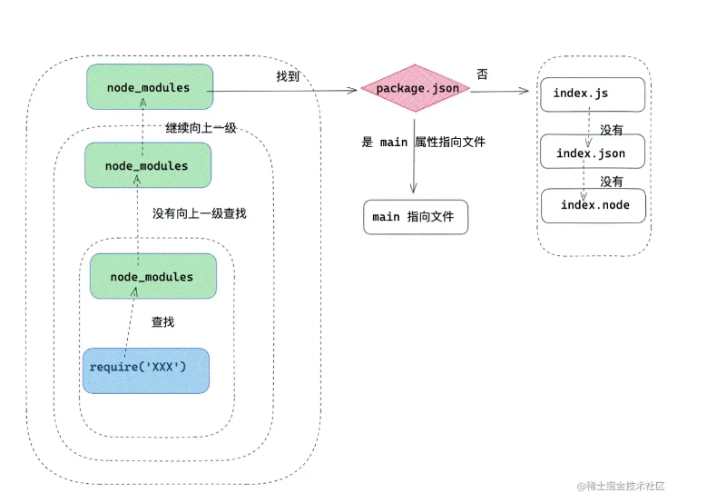

为什么需要模块化
模块化解决的问题
- 全局变量污染
- 依赖混乱 （复杂的依赖关系无法处理）
- 代码文件难以细分
模块化出现后，我们就可以把臃肿的代码细分到各个小文件中，便于后期维护管理,也可以提高代码复用率
通常一个文件就是一个模块，有自己的作用域，只向外暴露特定的变量和函数
CommonJS
global 是 node 的全局变量（类似于 window）
node 天生支持 CommonJS 模块化标准
node 规定：
- 每个模块文件上存在 module，require，exports, **filename , **dirname 五个变量，这五个变量我们可以在 Commonjs 规范下每一个 js 模块上直接使用它们
- module 记录当前模块信息。
- require 引入模块的方法。
- exports 当前模块导出的属性
- __filename 当前文件的绝对路径
- __dirname 当前文件的绝对路径(目录)
- node 中的每个 js 文件都是一个 commonJS 模块，通过 node 命令运行的模块，叫做入口模块
- 模块中的所有全局定义的变量、函数，都不会污染到其他模块
- 模块可以暴露（导出）一些内容给其他模块使用，需要暴露什么内容，就在模块中给 module.exports 赋值一个模块可以导入其他模块，使用函数
require("要导入的模块路径")即可完成，该函数返回目标模块的导出结果
导入模块时，可以省略
.js导入模块时，必须以
./或../开头(导入 node_module 包的时候引入采用无前缀)
- 一个模块在被导入时会运行一次，然后它的导出结果会被 node 缓存起来，后续对该模块导入时，不会重新运行，直接使用缓存结果
使用
common.js 可以导出同步函数，也可以导出异步函数
//math.js
console.log("math run");
function isOdd(n) {
return n % 2 !== 0;
}
function sum(a, b) {
return a + b;
}
//导出
module.exports = {
isOdd,
sum,
};
//index.js
//引入(.js可省略，也可以不省略)
const math = require("./math"); // 返回 { isOdd: fn, sum: fn }
console.log(math.sum(1, 2));
原理
require 文件加载流程
首先我们看一下 nodejs 中对标识符的处理原则。
- 首先像 fs ，http ，path 等标识符，会被作为 nodejs 的核心模块。
- ./ 和 ../ 作为相对路径的文件模块， / 作为绝对路径的文件模块。
- 非路径形式也非核心模块的模块，将作为自定义模块。
核心模块的处理：
核心模块的优先级仅次于缓存加载，在 Node 源码编译中，已被编译成二进制代码，所以加载核心模块，加载过程中速度最快。
路径形式的文件模块处理：
已 ./ ，../ 和 / 开始的标识符，会被当作文件模块处理。require() 方法会将路径转换成真实路径，并以真实路径作为索引，将编译后的结果缓存起来，第二次加载的时候会更快。至于怎么缓存的？我们稍后会讲到。
自定义模块处理： 自定义模块，一般指的是非核心的模块，它可能是一个文件或者一个包，它的查找会遵循以下原则：
- 在当前目录下的 node_modules 目录查找。
- 如果没有，在父级目录的 node_modules 查找，如果没有在父级目录的父级目录的 node_modules 中查找。
- 沿着路径向上递归，直到根目录下的 node_modules 目录。
- 在查找过程中，会找 package.json 下 main 属性指向的文件，如果没有 package.json ，在 node 环境下会以此查找 index.js ，index.json ，index.node。
require 模块引入与处理
CommonJS 模块同步加载并执行模块文件，CommonJS 模块在执行阶段分析模块依赖
有以下特点：
- 采用深度优先遍历（depth-first traversal），执行顺序是父 -> 子 -> 父
- 不会循环引用（依赖）
- 每个模块只会被加载一次（有缓存）
//main.js
const a = require('./a')
const b = require('./b')
console.log('node 入口文件')
//a.js
const getMes = require('./b')
console.log('我是 a 文件')
//b.js
const say = require('./a')
console.log('我是 b 文件')
输出
我是 b 文件
我是 a 文件
node 入口文件
commonjs 实现原理
commonjs 每个模块实际上都是在一个函数环境下执行的
在编译的过程中，实际 Commonjs 对 js 的代码块进行了首尾包装，它被包装之后的样子如下：
(function (exports, require, module, __filename, __dirname) {
const sayName = require("./hello.js");
module.exports = function say() {
return {
name: sayName(),
author: "我不是外星人",
};
};
});
在 Commonjs 规范下模块中，会形成一个包装函数，我们写的代码将作为包装函数的执行上下文，使用的 <font style="color:rgb(255, 80, 44);background-color:rgb(255, 245, 245);">require</font> ，<font style="color:rgb(255, 80, 44);background-color:rgb(255, 245, 245);">exports</font> ，<font style="color:rgb(255, 80, 44);background-color:rgb(255, 245, 245);">module</font> 本质上是通过形参的方式传递到包装函数中的。
我们写的所有 commonJs 代码都会在函数内运行，当我们在模块中打印函数特有的 arguments 的时候，我们可以拿到参数
将首尾包装抽离成一个函数
function wrapper(script) {
return (
"(function (exports, require, module, __filename, __dirname) {" +
script +
"\n})"
);
}
const modulefunction = wrapper(`
const sayName = require('./hello.js')
module.exports = function say(){
return {
name:sayName(),
author:'我不是外星人'
}
}
`);
在执行过程中；在模块加载的时候，会通过 runInThisContext (可以理解成 eval ) 执行 module function ，传入require ，exports ，module 等参数。最终我们写的 nodejs 文件就这么执行了。
runInThisContext(modulefunction)(
module.exports,
require,
module,
__filename,
__dirname
);
require 的源码
// id 为路径标识符
function require(id) {
/* 查找 Module 上有没有已经加载的 js 对象*/
const cachedModule = Module._cache[id]
/* 如果已经加载了那么直接取走缓存的 exports 对象 */
if(cachedModule){
return cachedModule.exports
}
/* 创建当前模块的 module */
const module = { exports: {} ,loaded: false , ...}
/* 将 module 缓存到 Module 的缓存属性中，路径标识符作为 id */
Module._cache[id] = module.exports
/* 加载文件 */
runInThisContext(wrapper('module.exports = "123"'))(module.exports, require, module, __filename, __dirname)
/* 加载完成 *//
module.loaded = true
/* 返回值 */
return module.exports
}
从上面我们总结出一次 require 大致流程是这样的；
- require 会接收一个参数——文件标识符，然后分析定位文件，分析过程我们上述已经讲到了，加下来会从 Module 上查找有没有缓存，如果有缓存，那么直接返回缓存的内容。
- 如果没有缓存，会创建一个 module 对象，缓存到 Module 上，然后执行文件，加载完文件，将 loaded 属性设置为 true ，然后返回 module.exports 对象。借此完成模块加载流程。
- 模块导出就是 return 这个变量的其实跟 a = b 赋值一样， 基本类型导出的是值， 引用类型导出的是引用地址。
- exports 和 module.exports 持有相同引用，因为最后导出的是 module.exports， 所以对 exports 进行赋值会导致 exports 操作的不再是 module.exports 的引用。
require 避免重复加载
从上面我们可以直接得出，require 如何避免重复加载的，首先加载之后的文件的 module 会被缓存到 Module 上，比如一个模块已经 require 引入了 a 模块，如果另外一个模块再次引用 a ，那么会直接读取缓存值 module ，所以无需再次执行模块。
对应 demo 片段中，首先 main.js 引用了 a.js ，a.js 中 require 了 b.js 此时 b.js 的 module 放入缓存 Module 中，接下来 main.js 再次引用 b.js ，那么直接走的缓存逻辑。所以 b.js 只会执行一次，也就是在 a.js 引入的时候。
require 避免循环引用
那么接下来这个循环引用问题，也就很容易解决了。为了让大家更清晰明白，那么我们接下来一起分析整个流程。
- ① 首先执行
node main.js，那么开始执行第一行require(a.js)； - ② 那么首先判断
a.js有没有缓存，因为没有缓存，先加入缓存，然后执行文件 a.js （需要注意 是先加入缓存， 后执行模块内容）; - ③ a.js 中执行第一行，引用 b.js。
- ④ 那么判断
b.js有没有缓存，因为没有缓存，所以加入缓存，然后执行 b.js 文件。 - ⑤ b.js 执行第一行，再一次循环引用
require(a.js)此时的 a.js 已经加入缓存，直接读取值。接下来打印console.log('我是 b 文件')，导出方法。 - ⑥ b.js 执行完毕，回到 a.js 文件，打印
console.log('我是 a 文件')，导出方法。 - ⑦ 最后回到
main.js，打印console.log('node 入口文件')完成这个流程。
module.exports缺陷
当导出一些函数等非对象属性的时候，也有一些风险，就比如循环引用的情况下。对象会保留相同的内存地址，就算一些属性是后绑定的，也能间接通过异步形式访问到。但是如果 module.exports 为一个非对象其他属性类型，在循环引用的时候，就容易造成属性丢失的情况发生了。
动态加载
require 可以在任意的上下文，动态加载模块。
console.log("我是 a 文件");
exports.say = function () {
const getMes = require("./b");
const message = getMes();
console.log(message);
};
this,exports,module.exports
刚开始 this,exports,module.exports 变量指向同一个东西，都是同一个空对象
最终导出的是module.exports
循环依赖
//index.js
var a = require("./a");
console.log("入口模块引用a模块：", a);
// a.js
var b = require("./b");
console.log("a模块引用b模块：", b);
exports.a = "修改值-a模块内变量";
// b.js
var a = require("./a");
console.log("b模块引用a模块", a);
exports.b = "原始值-b模块内变量";
输出结果如下
这种 AB 模块间的互相引用，本应是个死循环，但是实际并没有，因为 CommonJS 做了特殊处理——模块缓存。
上面就是对循环引用的处理过程，循环引用无非是要解决两个问题，怎么避免死循环以及输出的值是什么。CommonJS 通过模块缓存来解决：每一个模块都先加入缓存再执行，每次遇到 require 都先检查缓存，这样就不会出现死循环；借助缓存，输出的值也很简单就能找到了
总结
解决了变量污染，文件依赖等问题，commonjs 是动态导入(代码发生在运行时)
ES Module
浏览器中的使用ES Module
在script标签中加入type类型，这个模块就是启动模块
<script src="./index.js" type="module"></script>
index.js
var a = 1;
console.log(a);
//此时浏览器window.a也不会有值，不会污染全局变量
使用
/** 定义模块 math.js **/
var basicNum = 0;
var add = function (a, b) {
return a + b;
};
export { basicNum, add };
/** 引用模块 **/
import { basicNum, add } from "./math";
function test(ele) {
ele.textContent = add(99 + basicNum);
}
导出
ES Module 分为两种导出方式：
- 具名导出（普通导出），可以导出多个
- 默认导出，只能导出一个
一个模块可以同时存在两种导出方式，最终会合并为一个「对象」导出
ES Module 的导出类似导出一个对象
export const a = 1; // 具名，常用
export function b() {} // 具名，常用
export const c = () => {} // 具名，常用
const d = 2;
export { d } // 具名（具名导出一个d的方式，因为d在前面已经定义了，所以必须采用这样的
方式）
const k = 10
export { k as temp } // 具名（改变导出变量的key）
//默认导出只能导一次，没有覆盖关系（重复默认导出会报错）
// export default 3 // 默认，常用（默认导出不需要名字，只需要一个值）
// export default function() {} // 默认，常用
// const e = 4;
// export { e as default } // 默认
const f = 4, g = 5, h = 6
export { f, g, h as default} // 基本 + 默认
// 以上代码将导出下面的对象
/*
{
a: 1,
b: fn,
c: fn,
d: 2,
temp: 10,
f: 4,
g: 5,
default: 6
}
*/
混合导出
可以使用export和export default同时使用并且互不影响，只需要在导入时地方注意，如果文件里有混合导入，则必须先导入默认导出的，再导入单个导入的值。
export const name = "蛙人"
export const age = 24
export default {
fn() {}，
msg: "hello 蛙人"
}
导出导入代码必须为顶级代码，即不可放到代码块中
导入或者导出的代码不能放入判断，循环，函数体内
ES6 的模块不是对象，import命令会被 JavaScript 引擎静态分析，在编译时就引入模块代码，而不是在代码运行时加载，所以无法实现条件加载。
if (true) {
import xxx from 'XXX' // 报错
}
导入
导入（import）一个模块，相当于是运行一个模块，得到模块导出结果
导入可以针对性的导入，不是说导出多少个一定要用完
针对具名导出和默认导出，有不同的导入语法
// 仅运行一次该模块，不导入任何内容(会缓存)
import "模块路径"
//这句话可以不写在顶级代码里，动态加载
//跟仅运行一次该模块就差一个() 有括号就是动态加载
import("模块路径") // 动态导入，返回一个Promise，完成时的数据为模块对象
// 常用，导入属性 a、b，放到变量a、b中。a->a, b->b
import { a, b } from "模块路径" （这里要对应导出的名字）
// 常用，导入属性 default，放入变量c中。default->c
import c from "模块路径"
// 常用，default->c，a->a, b->b
import c, { a, b } from "模块路径"
// 常用，将模块对象放入到变量obj中（将具名和默认的变量全部导出）
import * as obj from "模块路径"
// 导入属性a、b，放到变量temp1、temp2 中
import {a as temp1, b as temp2} from "模块路径"
// 导入属性default，放入变量a中，default是关键字，不能作为变量名，必须定义别名
import {default as a} from "模块路径"
//导入属性default、b，放入变量a、b中
import {default as a, b} from "模块路径"
// 以上均为静态导入
动态加载
在 JavaScript 中，可以使用 ES6 模块的动态加载特性来实现模块的动态加载。这通常是通过import()函数实现的，它返回一个 Promise 对象。
下面是一个使用import()动态加载模块的例子：
// 假设我们有一个module.js文件，内容如下：
// module.js
export function hello() {
return "Hello, World!";
}
// 我们可以在另一个脚本中动态加载这个模块：
// main.js
let modulePath = "./module.js"; // 模块的路径
// 使用import()函数动态加载模块
import(modulePath)
.then((module) => {
// 使用模块中导出的功能
console.log(module.hello());
})
.catch((err) => {
// 处理加载模块时的错误
console.error(err);
});
在上面的代码中，import()函数用于动态加载./module.js模块。加载成功后，会输出Hello, World!。如果加载失败，会捕获到错误并打印出来。这种方式可以用于按需加载模块，或者根据不同的条件动态加载不同的模块。
原理
动态加载是异步的，后续再发 ajax 请求，一开始打包中不会有
特性
静态语法
ES6 module 的引入和导出是静态的，<font style="color:rgb(255, 80, 44);background-color:rgb(255, 245, 245);">import</font> 会自动提升到代码的顶层 ，<font style="color:rgb(255, 80, 44);background-color:rgb(255, 245, 245);">import</font> , <font style="color:rgb(255, 80, 44);background-color:rgb(255, 245, 245);">export</font> 不能放在块级作用域或条件语句中。
也可以这样 import(“模块路径”) 动态依赖，返回一个 Promise，完成时的数据为模块对象（异步）
执行特性
所有的加载模块都会被提前
CommonJS 模块同步加载并执行模块文件，ES6 模块提前加载并执行模块文件，ES6 模块在预处理阶段分析模块依赖，在执行阶段执行模块，两个阶段都采用深度优先遍历，执行顺序是子 -> 父。
//main.js
console.log('main.js开始执行')
import say from './a'
import say1 from './b'
console.log('main.js执行完毕')
//a.js
import b from './b'
console.log('a模块加载')
export default function say (){
console.log('hello , world')
}
//b.js
console.log('b模块加载')
export default function sayhello(){
console.log('hello,world')
}
执行结果
b 模块加载
a 模块加载
main.js 开始执行
main.js 执行完毕
说明了es module 的加载是静态，并且每个模块也只会被加载一次,因为b 模块加载，a 模块加载被提前了
导出绑定
export导出的值是值的引用，并且内部有映射关系，这是export关键字的作用。而且导入的值，不能进行修改（只读状态）。
// index.js
export let num = 0;
export function add() {
++num
}
import { num, add } from "./index.js"
console.log(num) // 0
add()
console.log(num) // 1
num = 10 // 抛出错误
//但可以这样修改
import { num , addNumber } from './a'
console.log(num) // num = 1
addNumber()
console.log(num) // num = 2
总结
使用 import 被导入的模块运行在严格模式下。
使用 import 被导入的变量是只读的，可以理解默认为 const 装饰，无法被赋值
使用 import 被导入的变量是与原变量绑定/引用的，可以理解为 import 导入的变量无论是否为基本类型都是引用传递。
循环依赖
esm 的 import 命令是在编译阶段就执行，优先于自身内容执行。
esm 并不关心是否存在循环引用，只是生成一个指向被加载模块的引用，代码未执行时，这个引用的值就是 undefined。
总结
Es Module也是解决了变量污染问题，依赖顺序问题，Es Module语法也是更加灵活，导出值也都是导出的引用，导出变量是可读状态，这加强了代码可读性。
ES6 模块与 CommonJS 模块的差异
共同点
不会污染全局变量
保证依赖顺序
可以细分与复用代码
不同点
- 动态与静态
Es Module：静态，不可以动态加载语句，只能声明在该文件的最顶部，在代码运行之前，就需要分析出所有的依赖关系，这使得 Es Module 可以进行树摇优化（tree shaking）
也可以动态依赖（异步）
CommonJs：代码发生在运行时，动态依赖（需要代码运行后才能确定依赖），动态依赖是同步执行的（比如 I/O 操作需要一年就等一年）
- 值
CommonJs 导出值是拷贝，可以修改导出的值，这在代码出错时，不好排查引起变量污染
const getMes = require("./b");
console.log("我是 a 文件");
module.exports = { b: 2 };
const express = require("express");
const a = require("./a");
const b = require("./b");
a.b = 3; //可以修改
console.log(a, "a");
Es Module 导出的是引用值，并且值都是只读的，不能修改
import data, { add } from "./3.js";
data = 2; //不能修改，会报错
符号绑定
import data, { add } from "./3.js";
console.log(data); //4
add();
console.log(data); //6
let e = 4;
function add() {
e = e + 2;
return e;
}
export { e as default, add }; // 默认
在这种情况下，导入 data 数据发生了变化，因为 Es Module 中，e 和 data 这两个数据使用的是同一块内存空间，这种情况叫做符号绑定（一块内存但他有多个符号，e 和 data 变量都指向他）这种情况在 js 语言中绝无仅有
注意：只有导入的时候是符号绑定，后续任何的操作（赋值）都会开辟新的内存空间
所以具名导出一定是要是常量，如果导出的是对象，那他就是可变的（引用类型），如果是默认导出，那他本身就是一个对象，就是可变的
正常逻辑
let a = 1;
let b = a;
a = 2; // 这时候修改a 不会影响b 因为a,b用的是两块内存空间，但是在es module中用的是同一块内存空间
3.标准不同
CommonJS，简称 CMJ，这是一个社区规范，出现时间较早，使用函数实现，目前仅 node 环境支持
ES Module，简称 ESM，这是随着 ES6 发布的官方模块化标准，使用语法实现，目前浏览器和新版本 node 环境均支持
4.顶层 this
commonjs 的 this 指向当前模块导出对象
ES Module 是 undefined
5.隔离变量的方式
CommonJS 是通过函数
ES Module 是官方语法
AMD
amd 是专门为浏览器所设计的
AMD 规范采用异步方式加载模块，模块的加载不影响它后面语句的运行。所有依赖这个模块的语句，都定义在一个回调函数中，等到加载完成之后，这个回调函数才会运行。这里介绍用 require.js 实现 AMD 规范的模块化：用 require.config()指定引用路径等，用 define()定义模块，用 require()加载模块。
1.加载模块
首先我们需要引入 require.js 文件和一个入口文件 main.js。main.js 中配置 require.config()并规定项目中用到的基础模块。
/** 网页中引入require.js及main.js **/
<script src="js/require.js" data-main="js/main"></script>
/** main.js 入口文件/主模块 **/
// 首先用config()指定各模块路径和引用名
require.config({
baseUrl: "js/lib",
paths: {
"jquery": "jquery.min", //实际路径为js/lib/jquery.min.js
"underscore": "underscore.min",
}
});
// 执行基本操作
require(["jquery","underscore"],function($,_){
// some code here
});
2.定义模块
// name和deps都是非必选的参数，而callback可以是一个对象，或者是具有返回值的函数
define([name], [deps], callback)
存在依赖的模块
假设你要写一个依赖 jquery 的模块，那么你需要在 define 方法中声明依赖。
define(['jquery'], function($) {
function setColor(select, color) {
$(select).css('color', color)
}
return {
setColor: setColor
}
})
另一种方法
define(function(require, exports, module) {
var $ = require('jquery')
function setColor(select, color) {
$(select).css('color', color)
}
return {
setColor: setColor
}
})
3.使用模块
require(['simple', 'jquery', 'funcModule', 'depModule'], function(simple, $, funcModule, depModule) {
console.log(simple)
console.log($)
$('.word').css({
fontSize: '24px',
color: 'blue'
})
var result = funcModule.add(1,2)
console.log(result)
depModule.setColor('.word', 'yellow')
})